2nd Place & Top 10 Nationwide · JA Philippines × J.P. Morgan Chase CareerConnect
Two teams of Grade 12 researchers from Ilaya Barangka Integrated School carried the school’s name to the national stage — finishing among the country’s very best at the CareerConnect Capstone Finals, the flagship program of JA Philippines in partnership with J.P. Morgan Chase. Out of more than 1,000 student-researchers nationwide, both teams advanced to the national finals in Taguig City, and the very projects featured in this issue — Project IBIS and Project SSPI — brought the recognition home.
Watch: The Project IBIS & SSPI journey to the CareerConnect Capstone Finals
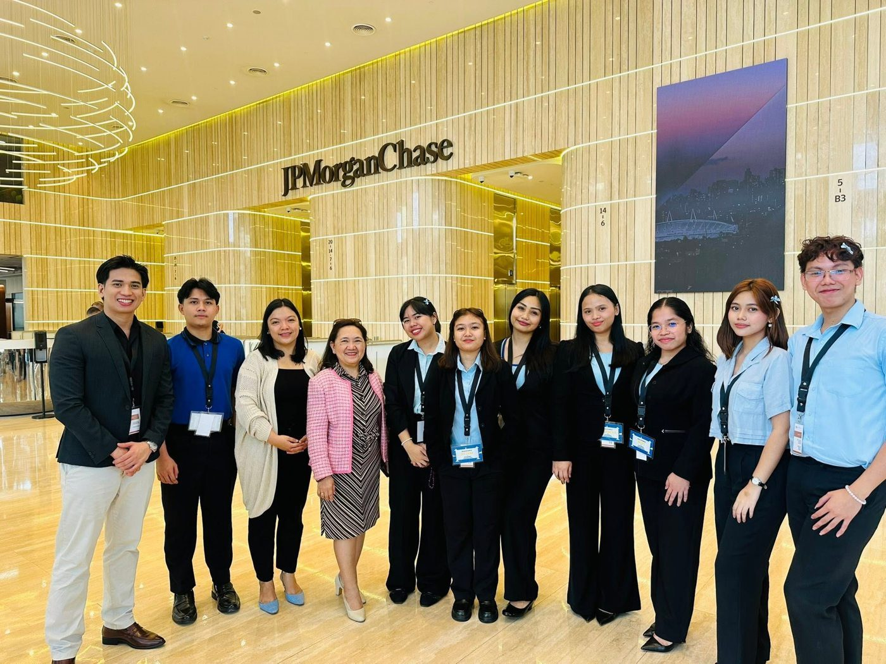
The Ilaya Barangka delegation at the national CareerConnect Capstone Finals · J.P. Morgan Chase, Taguig City
Researchers · Juliana Victoria M. Venoza, Trish Faith V. Quiroz, Jenecy A. Babula, Sheena Arsé G. Becera, and Prince Joshua Dela Cruz
“Being in the Top 10 nationwide is a massive victory. You fought hard, defended Project SSPI brilliantly, and made our school so proud.”
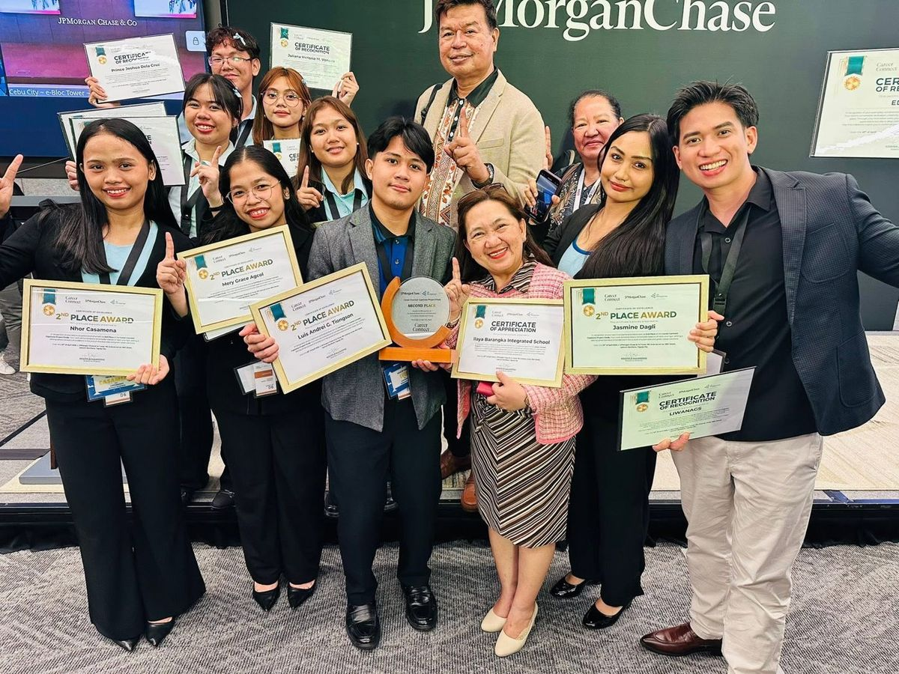
Team Liwanags · 2nd Place, Nationwide
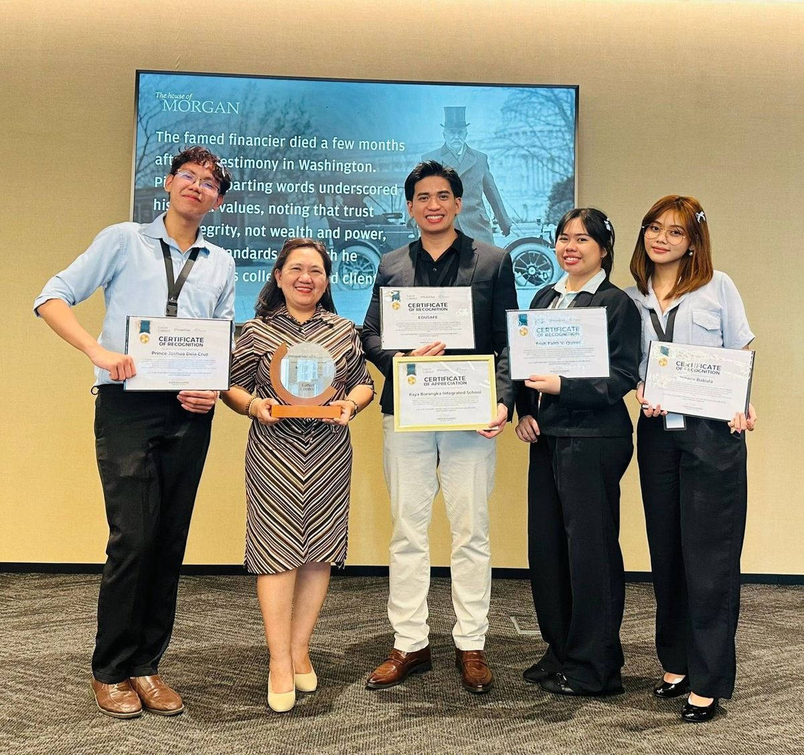
Team EduSafe · Top 10, Nationwide
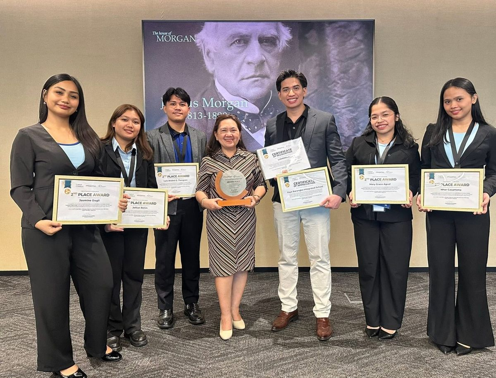
Receiving the Project IBIS award
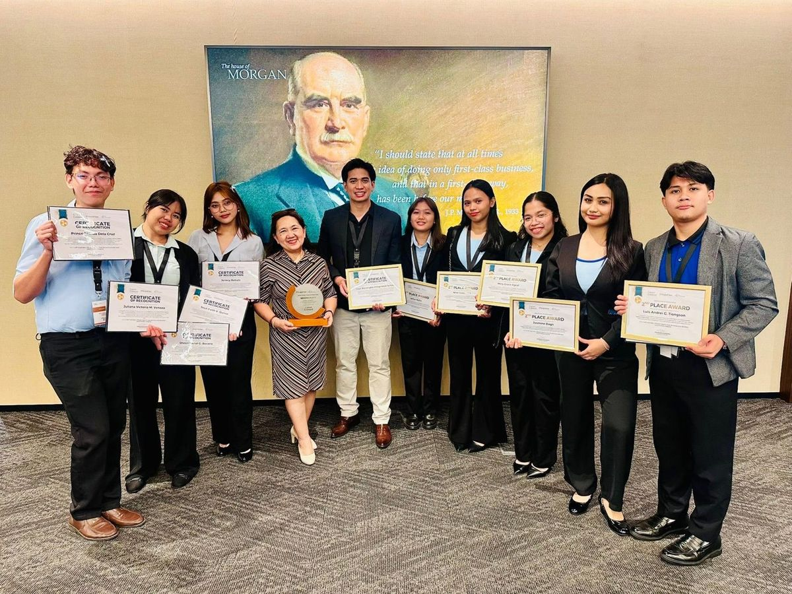
The Ilaya Barangka delegation
“Super proud of my Grade 12 researchers. Sulit lahat ng puyat, paper revisions, at Q&A practice natin — you all defended your research like true professionals.”
Heartfelt thanks to our School Principal, Mrs. Ellalyn A. Abutal, and to every mentor, teacher, and family who stood behind these teams.
— Mr. Franklin D. Garvida, Research Adviser
Research Defense Day
Where Inquiry Met Scrutiny
March 25, 2026 · Nine Research Teams, One Evaluation Panel
On March 25, 2026, nine Grade 12 research teams stood before an external evaluation panel to defend the studies featured in this issue. Each team presented its methodology, findings, and recommendations, then fielded questions from panelists drawn from academia and the local research community — the final test before publication.
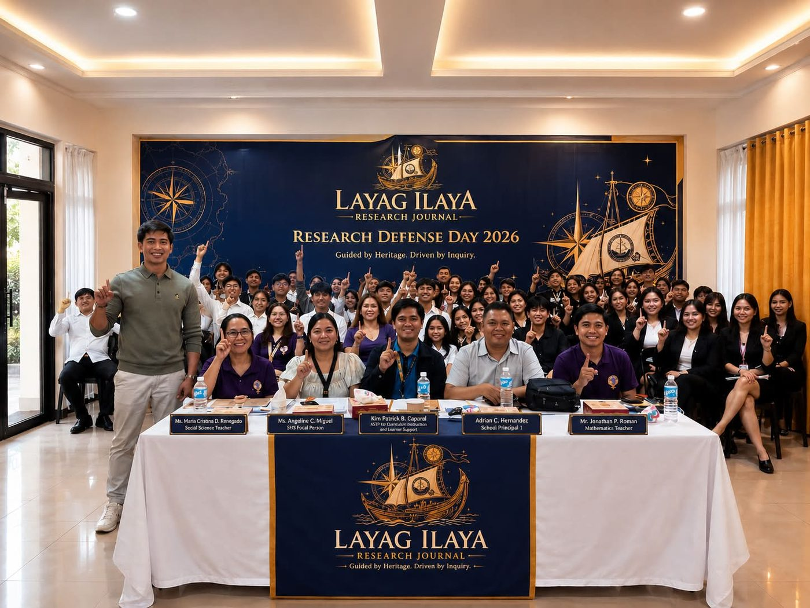
Researchers, advisers, and the evaluation panel after a full day of defenses · Ilaya Barangka Integrated School
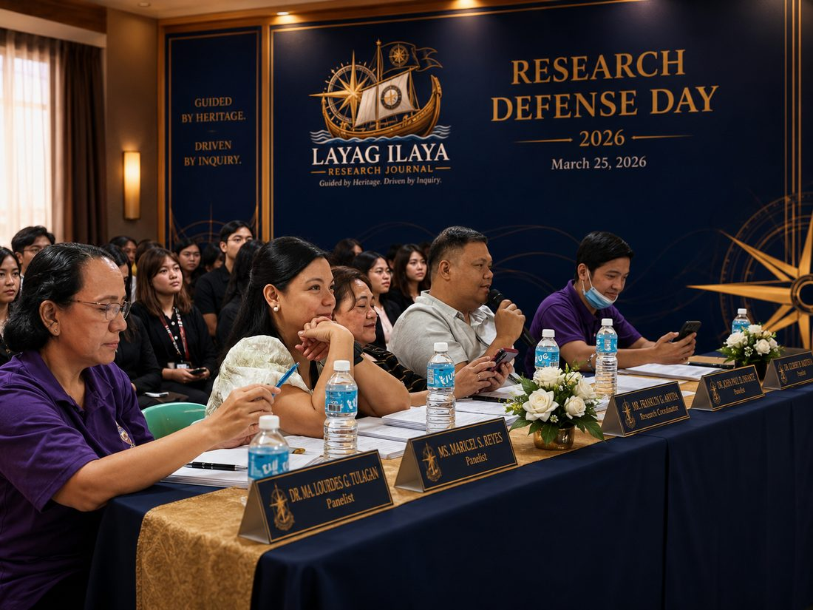
Evaluation Panel · March 25, 2026
Ms. Maria Cristina D. RenegadoSocial Science Teacher
Ms. Angeline C. MiguelSHS Focal Person
Kim Patrick B. CaparalASTP for Curriculum Instruction and Learner Support
Adrian C. HernandezSchool Principal 1
Mr. Jonathan P. RomanMathematics Teacher
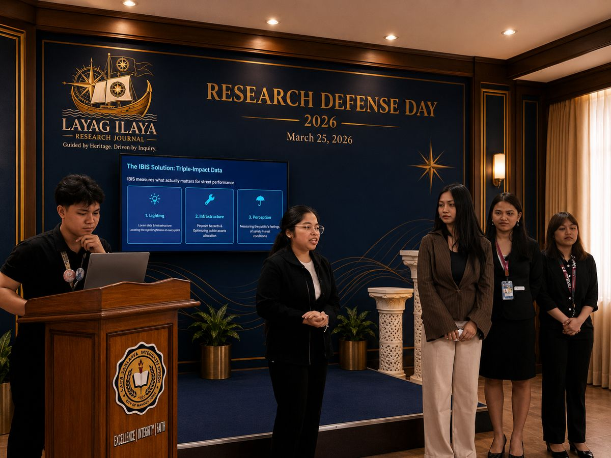
Project IBIS team presenting their geospatial auditing methodology
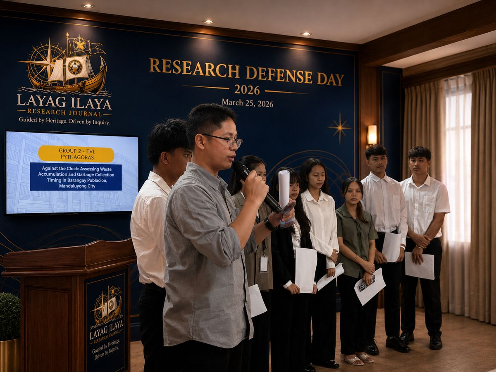
Group 2 defends “Against the Clock,” on waste-collection timing in Barangay Plainview
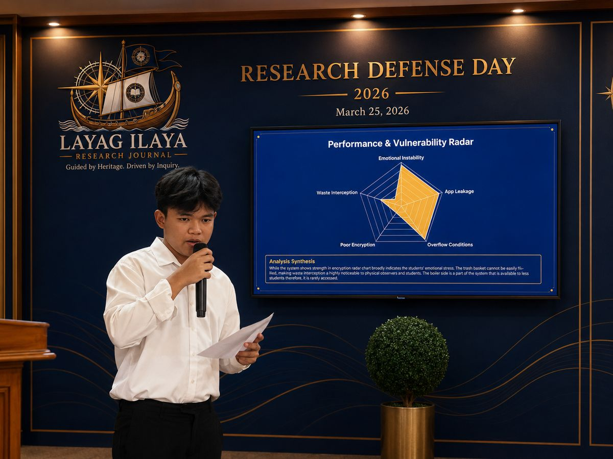
A researcher fields panel questions on his team’s findings
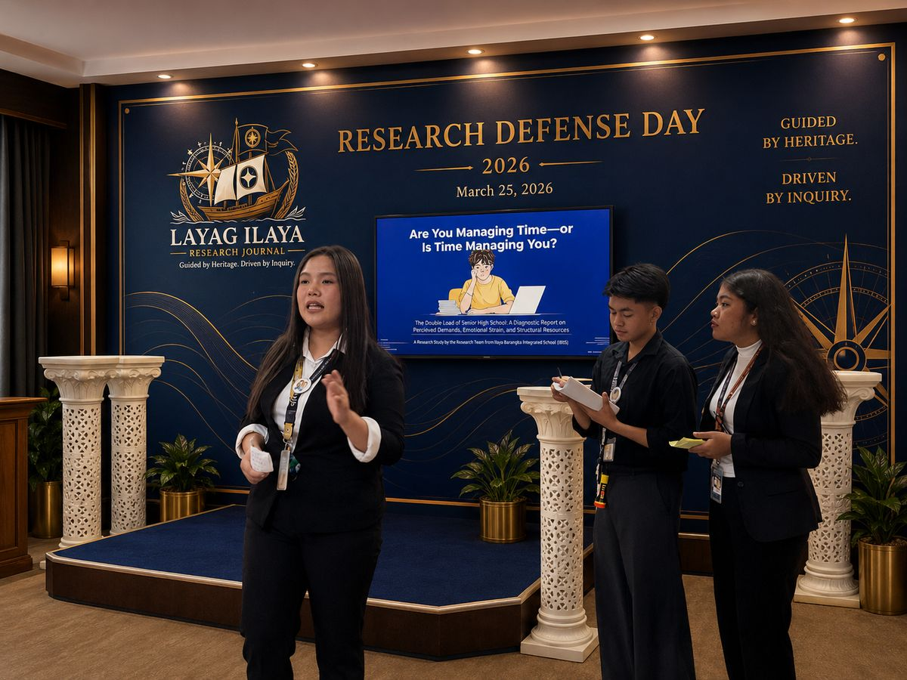
The research team behind “The Clock is Ticking” presents their diagnostic report
“A defense is not the end of inquiry — it is where evidence is tested, sharpened, and made ready to serve. Every team in this room today carried that responsibility well.”
With thanks to our evaluation panel and to every adviser who prepared these researchers to stand and defend their work with confidence.